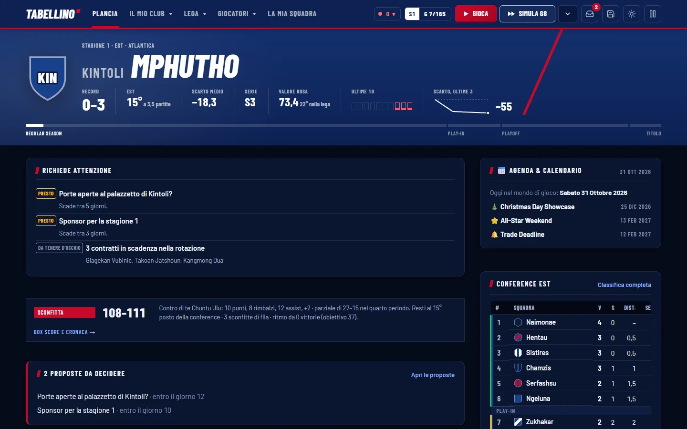
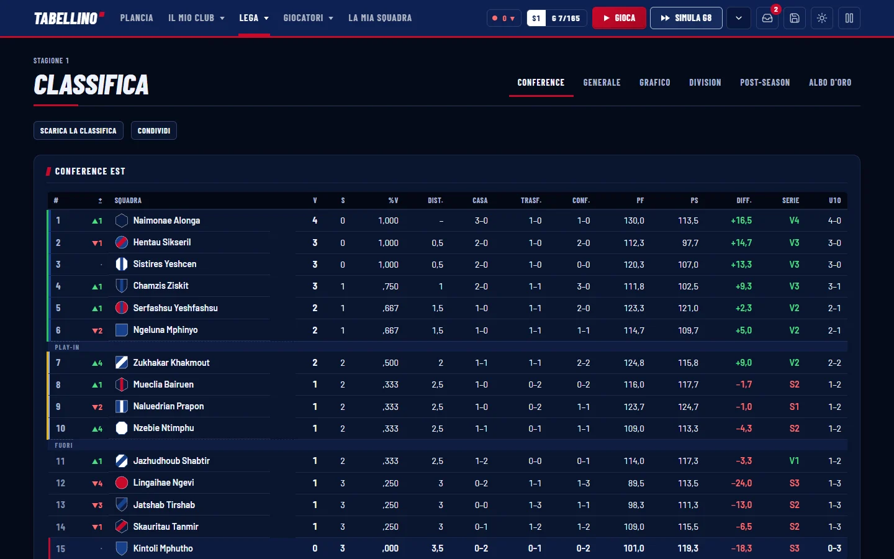
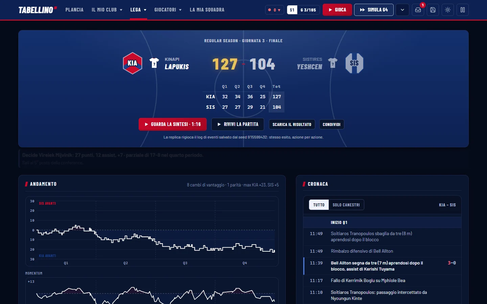
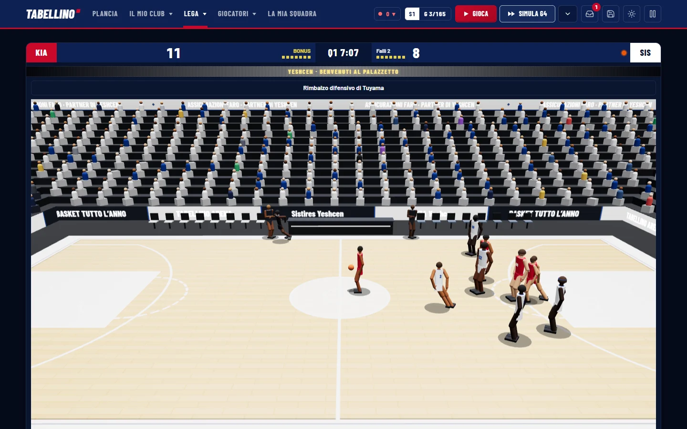

Si aggiorna da solo
Quando esce una versione nuova il gioco te lo dice. Ti basta un clic per aggiornare, senza riscaricare nulla a mano. I salvataggi restano dove sono.
Gestionale di basket
Una lega inventata, partite simulate dal motore, e le scelte che contano sono tue.
Windows ti ferma con un avviso blu? Ecco cosa fare.

Dentro il gioco
Dalla plancia della tua squadra alla partita in 3D. Tocca un'immagine per vederla a tutto schermo.



Cosa c'è di nuovo
Carico le novità...
Prima e dopo l'installazione
La prima volta Windows può mostrare un avviso blu prima di aprire il programma d'installazione. Succede con molte app nuove e non vuol dire che il file sia pericoloso.
Compare «Windows ha protetto il PC». Non premere «Non eseguire».
Clicca sul link «Ulteriori informazioni» in mezzo alla finestra.
Ora compare «Esegui comunque». Premilo e l'installazione parte.
Perché succede? Un certificato a pagamento per i programmi Windows costa ogni anno e Tabellino è un progetto indipendente, quindi non ne ha uno. Windows non conosce ancora l'editore e per prudenza chiede conferma. Gli aggiornamenti, invece, sono firmati e il gioco li verifica da solo prima di installarli.
Quando esce una versione nuova il gioco te lo dice. Ti basta un clic per aggiornare, senza riscaricare nulla a mano. I salvataggi restano dove sono.
Le leghe restano sul tuo PC, mai su un server. Da Salvataggi puoi esportarle in un file .tabellino, per fare una copia o portarle su un altro computer.
In arrivo. Per ora Tabellino è solo per Windows: le altre versioni usciranno più avanti, e le annunceremo qui.